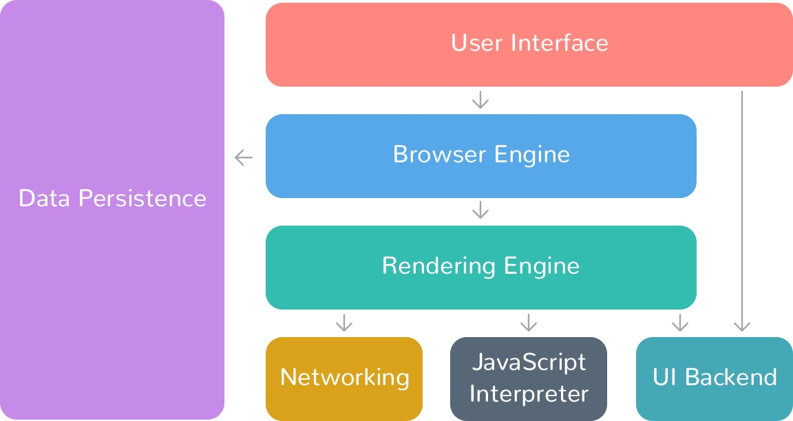
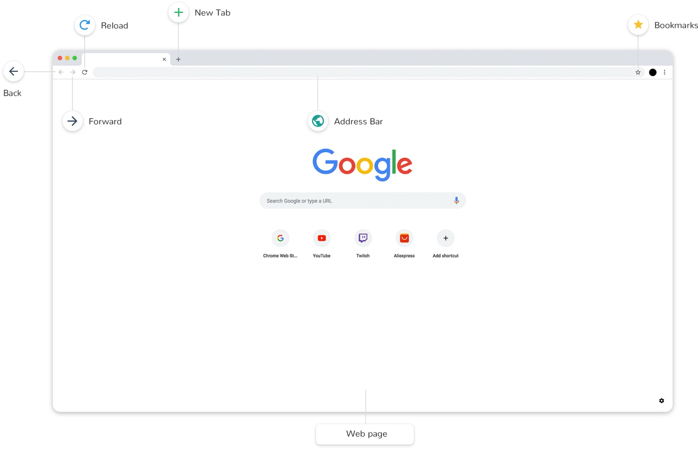
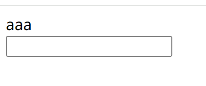
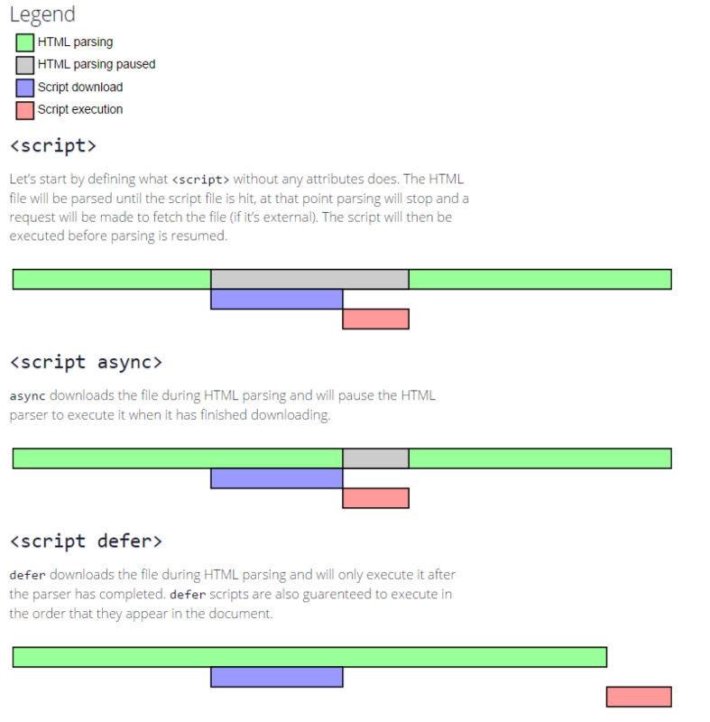
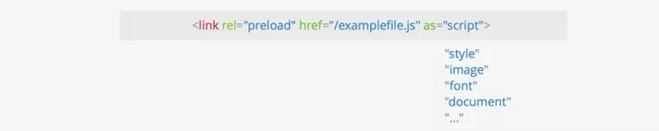
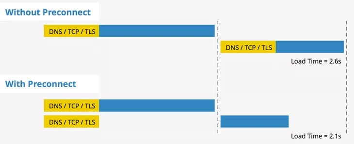

浏览器组成
什么是浏览器？
Web 浏览器简称为浏览器，是一种用于访问互联网上信息的应用软件。浏览器的主要功能是从服务器检索 Web 资源并将其显示在 Web 浏览器窗口中。
Web 资源通常是 HTML 文档，但也可能是 PDF、图像、音频、视频或其他类型的内容。资源的位置是通过使用 URI（统一资源标识符）指定的。
浏览器包含结构良好的组件，这些组件执行一系列任务让浏览器窗口能显示 Web 资源。
本文我们就来聊一聊关于浏览器的组成部分。
下图是关于浏览器的架构图：

一个 Web 浏览器中，主要组件有：
- 用户界面（user interface）
- 浏览器引擎（browser engine）
- 渲染引擎（rendering engine）
- 网络（networking）
- JS 解释器（JavaScript interpreter）
- 用户界面后端（UI backend）
- 数据存储（data storage）
下面我们来具体看一下每一个部分的作用。
用户界面（user interface）
用户界面用于呈现浏览器窗口部件，比如地址栏、前进后退按钮、书签、顶部菜单等。
如下图所示：

浏览器引擎（browser engine）
它是 UI 和渲染引擎之间的桥梁。接收来自 UI （用户界面）的输入，然后通过操纵渲染引擎将网页或者其他资源显示在浏览器中。
渲染引擎（rendering engine）
负责在浏览器窗口上显示请求的内容。例如，用户请求一个 HTML 页面，则它负责解析 HTML 文档和 CSS，并将解析和格式化的内容显示在屏幕上。我们平时说的浏览器内核就是指这部分。
现代网络浏览器的渲染引擎：
- Firefox：Gecko Software
- Safari：WebKit
- Chrome、Opera (15 版本之后)：Blink
- Internet Explorer：Trident
为了在屏幕上绘制像素（第一次渲染），浏览器在从网络接收数据（HTML、CSS、JavaScript）后必须经过一系列称为关键渲染路径的过程/技术。这包括 DOM、CSSOM、渲染树、布局和绘画。
网络（networking）
该模块处理浏览器内的各种网络通信。它使用一组通信协议，如 HTTP、HTTPs、FTP，同时通过 URL 获取请求的资源。
JS 解释器（JavaScript interpreter）
JavaScript 是一种脚本语言，允许我们动态更新 Web 内容、控制由浏览器的 JS 引擎执行的多媒体和动画图像。
DOM 和 CSSOM 为 JS 提供了一个接口，可以改变 DOM 和 CSSOM。由于浏览器不确定特定的 JS 会做什么，它会在遇到 script 标签后立即暂停 DOM 树的构建。
每个脚本都是一个解析拦截器，会让 DOM 树的构建停止。
JS 引擎在从服务器获取并输入 JS 解析器后立即开始解析代码。它将它们转换为机器理解的代表性对象。在抽象句法结构的树表示中存储所有解析器信息的对象称为对象语法树（AST）。这些对象被送入一个解释器，该解释器将这些对象翻译成字节码。
这些是即时 (JIT) 编译器，这意味着从服务器下载的 JavaScript 文件在客户端的计算机上实时编译。解释器和编译器是结合在一起的。解释器几乎立即执行源代码；编译器生成客户端系统直接执行的机器代码。
不同的浏览器使用不同的 JS 引擎：
- Chrome： V8 (JavaScript 引擎) (Node JS 建立在此之上)
- Mozilla： SpiderMonkey (旧称“松鼠鱼”)
- Microsoft Edge：Chakra
- Safari：JavaScriptCore / Nitro WebKit
用户界面后端（UI backend）
用于绘制基本的窗口小部件，比如下拉列表、文本框、按钮等，向上提供公开的接口，向下调用操作系统的用户界面。
比如页面中显示的文本框，按钮实际是操作系统给我们提供的，而不是浏览器
用户界面后端向下去调用操作系统接口来绘制小部件，他把调用到的接口向上提供给用户界面，然后再进行绘制

数据存储（data storage）
这是一个持久层。浏览器可能需要在本地保存各种数据，例如 cookie。浏览器还支持 localStorage、IndexedDB、WebSQL 和 FileSystem 等存储机制。
总结
最后，我们对浏览器的组成部分进行一个总结。
浏览器由以下几个部分组成：
- 用户界面（user interface）
用于呈现浏览器窗口部件，比如地址栏、前进后退按钮、书签、顶部菜单等
- 浏览器引擎（browser engine）
用户在用户界面和渲染引擎中传递指令
- 渲染引擎（rendering engine）
负责解析 HTML、CSS，并将解析的内容显示到屏幕上。我们平时说的浏览器内核就是指这部分。
- 网络（networking）
用户网络调用，比如发送 http 请求
- 用户界面后端（UI backend）
用于绘制基本的窗口小部件，比如下拉列表、文本框、按钮等，向上提供公开的接口，向下调用操作系统的用户界面。
- JS 解释器（JavaScript interpreter）
解释执行 JS 代码。我们平时说的 JS 引擎就是指这部分。
- 数据存储（data storage）
用户保存数据到磁盘中。比如 cookie、localstorage 等都是使用的这部分功能。
浏览器内核（渲染引擎）
执行 html,css,js 代码需要依靠浏览器，浏览器由两部分组成
- shell：外壳
- core：内核（JS 执行引擎、渲染引擎）
IE: Trident
Firfox: Gecko
Chrome: Webkit / Blink
Safari: Webkit
Opera: Presto / Blink
只要有内核就可以执行 html 和 css 代码
资源提示关键词
defer 和 async
现代浏览器引入了 defer 和 async。
async 表示加载和渲染后续文档元素的过程将和 script.js 的加载与执行并行进行（异步）。也就是说下载 JS 文件的时候不会阻塞 DOM 树的构建，但是执行该 JS 代码会阻塞 DOM 树的构建。
<script async src="script.js"></script>
defer 表示加载后续文档元素的过程将和 script.js 的加载并行进行（异步），但是 script.js 的执行要在所有元素解析完成之后，DOMContentLoaded 事件触发之前完成。也就是说，下载 JS 文件的时候不会阻塞 DOM 树的构建，然后等待 DOM 树构建完毕后再执行此 JS 文件。
<script defer src="myscript.js"></script>
具体加载瀑布图如下图所示：

preload
preload 顾名思义就是一种预加载的方式，它通过声明向浏览器声明一个需要提前加载的资源，当资源真正被使用的时候立即执行，就无需等待网络的消耗。
<link rel="preload" href="style1.css" as="style" />
<link rel="preload" href="main1.js" as="script" />
在上面的代码中，会先加载 style1.css 和 main1.js 文件（但不会生效），在随后的页面渲染中，一旦需要使用它们，它们就会立即可用。
要使用 preload，必须使用 link 标签
可以使用 as 来指定将要预加载的内容类型。

preload 指令的一些优点如下：
- 允许浏览器设置资源优先级，从而允许 Web 开发人员优化某些资源的交付。
- 使浏览器能够确定资源类型，因此它可以判断将来是否可以重用相同的资源。
- 浏览器可以通过引用 as 属性中定义的内容来确定请求是否符合内容安全策略。
- 浏览器可以根据资源类型发送合适的 Accept 头（例如：image/webp ）
对于脚本资源，可以使用 preload 属性来指示浏览器提前下载并缓存脚本文件，以便在稍后执行时能够更快地加载和执行。
对于样式表资源，可以使用 preload 属性来指示浏览器提前下载并缓存样式表文件，以便在稍后应用到文档时能够更快地渲染页面。
对于字体资源，可以使用 preload 属性来指示浏览器提前下载并缓存字体文件，以便在稍后应用到文档时能够更快地显示文本内容。
prefetch
prefetch 是一种利用浏览器的空闲时间加载页面将来可能用到的资源的一种机制，通常可以用于加载非首页的其他页面所需要的资源，以便加快后续页面的首屏速度。
prefetch 加载的资源可以获取非当前页面所需要的资源，并且将其放入缓存至少 5 分钟（无论资源是否可以缓存）。并且，当页面跳转时，未完成的 prefetch 请求不会被中断；
它的用法跟 preload 是一样的：
<link rel="prefetch" href="/path/to/style.css" as="style" />
DNS prefetching
DNS prefetching 允许浏览器在用户浏览时在后台对页面执行 DNS 查找。这最大限度地减少了延迟，因为一旦用户单击链接就已经进行了 DNS 查找。
通过将 rel=”dns-prefetch” 标记添加到链接属性，可以将 DNS prefetching 添加到特定 URL。建议在诸如 Web 字体、CDN 之类的东西上使用它。
<!-- Prefetch DNS for external assets -->
<link rel="dns-prefetch" href="//fonts.googleapis.com" />
<link rel="dns-prefetch" href="//www.google-analytics.com" />
<link rel="dns-prefetch" href="//cdn.domain.com" />
prerender
prerender 与 prefetch 非常相似，prerender 同样也是会收集用户接下来可能会用到的资源。
不同之处在于 prerender 实际上是在后台渲染整个页面。
<link rel="prerender" href="https://www.keycdn.com" />
当浏览器遇到带有 prerender 属性的 link 标签时，它会在后台自动加载并渲染指定的页面，而不会显示在当前页面中。
当用户访问到该页面时，浏览器可以立即呈现出来，从而提供更快的用户体验。
prerender 属性适用于那些用户可能会访问到但不是当前页面所必需的内容，例如下一页、相关文章等。 需要注意的是，prerender 属性可能会增加网络和服务器负载，并且只有在用户设备和网络条件允许时才会生效。因此，在使用 prerender 属性时需要谨慎考虑其适用性和效果。
preconnect
preconnect 指令允许浏览器在 HTTP 请求实际发送到服务器之前设置早期连接。
我们知道，浏览器要建立一个连接，一般需要经过 DNS 查找，TCP 三次握手和 TLS 协商（如果是 https 的话），这些过程都是需要相当的耗时的。所以 preconnet，就是一项使浏览器能够预先建立一个连接，等真正需要加载资源的时候就能够直接请求了。

以下是为 CDN URL 启用 preconnect 的示例。
<link href="https://cdn.domain.com" rel="preconnect" crossorigin />
在上面的代码中，浏览器会进行以下步骤：
- 解释 href 的属性值，判断是否是合法的 URL。如果是合法的 URL，然后继续判断 URL 的协议是否是 http 或者 https，如果不是合法的 URL，则结束处理。
- 如果当前页面 host 不同于 href 属性中的 host，那么将不会带上 cookie，如果希望带上 cookie 等信息，可以加上 crossorign 属性。